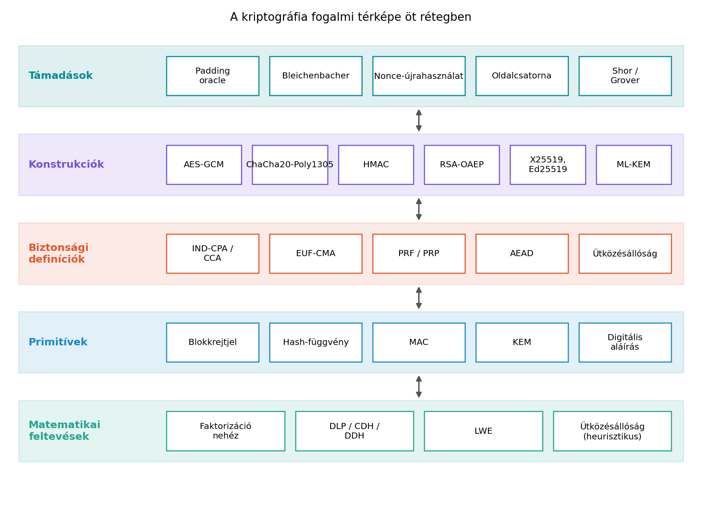
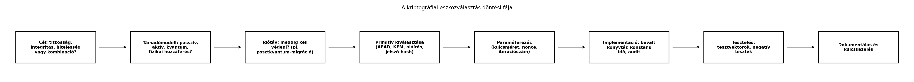

A kurzus utolsó előtti állomásaként nem új matematikai gépezetet vezetünk be, hanem a már felépített tudást rendezzük át egyetlen gondolati hálóba. A vizsgán és a mérnöki gyakorlatban a legnehezebb kérdés ritkán az, hogy hogyan kell kiszámolni egy moduláris inverzet vagy egy AES-kört; sokkal gyakrabban az, hogy melyik eszközt válasszuk, és milyen feltevésre építjük. Egy rosszul kiválasztott primitív – például csak titkosítás integritásvédelem nélkül, vagy ECB üzemmód képekhez – akkor is katasztrófához vezet, ha a felhasznált algoritmus önmagában erős. Ez az alfejezet két célt szolgál: egyrészt összekapcsolja a primitíveket, a biztonsági definíciókat, a feltételezett nehézségeket és a tipikus támadásokat; másrészt egy döntési fát ad, amely segít egy konkrét alkalmazási igényhez a megfelelő eszközt és paramétereket kiválasztani. A fogalmi térkép nem elsősorban memorizálásra való, hanem arra, hogy a vizsgafeladatokban és a későbbi munkában gyorsan felismerjük: ha egy rendszerben „titkosított üzenet” szerepel, akkor még nem tudjuk, hogy véd-e az átírástól, a visszajátszástól vagy a kulcs kompromittálódásától.
A kriptográfia építőköveit érdemes öt rétegbe rendezni. Legalul vannak a matematikai feltevések, amelyekre a nyilvános kulcsú konstrukciók és bizonyos szimmetrikus bizonyítások épülnek. Felettük a primitívek, vagyis azok az absztrakt funkciók, amelyeket a sémák megvalósítanak: blokkrejtjel, hash-függvény, MAC, KEM, digitális aláírás. A következő réteg a biztonsági definíciók világa: itt mondjuk ki pontosan, mit jelent az, hogy egy titkosítás „biztonságos”, és milyen képességű támadó ellen. A negyedik réteg a konstrukciók szintje, ahol a primitívekből konkrét, szabványosított sémákat építünk (AES-GCM, ChaCha20-Poly1305, HMAC, RSA-OAEP, X25519, Ed25519, ML-KEM). Legfelül a támadások találhatók, amelyek egy-egy konstrukció vagy rossz implementáció ellen irányulnak, és gyakran azt mutatják meg, hogy egy bizonyos definíciót miért nem sikerült elérni. A rétegek közötti kapcsolatok nem egyirányúak: egyetlen feltevés (például a DLP) több primitívet is alátámaszt, egy primitív több konstrukcióban is szerepelhet, és egy támadás több definíciót is megsérthet.

A táblázatban összefoglaljuk a legfontosabb primitívekhez tartozó feltevéseket, biztonsági definíciókat, szabványos konstrukciókat és reprezentatív támadásokat. A lista nem teljes, de a vizsgafelkészülés gerincét adja.
| Primitív | Feltevés | Biztonsági definíció | Konstrukció | Támadás |
|---|---|---|---|---|
| Szimmetrikus titkosítás | PRP / PRF heurisztika | IND-CPA, IND-CCA, AEAD | AES-GCM, ChaCha20-Poly1305 | Nonce-újrahasználat, padding oracle, oldalcsatorna |
| Hash-függvény | Ütközésállóság (heurisztika) | Preimage-, második preimage-, ütközésellenállás | SHA-2, SHA-3, BLAKE3 | Születésnapi támadás, hosszkiterjesztés (Merkle–Damgård) |
| MAC | PRF (heurisztika) | EUF-CMA | HMAC, CMAC, Poly1305 | Időzítéses összehasonlítás, kulcs-újrahasználat |
| KEM | DDH, CDH, LWE, faktorizáció | IND-CCA | X25519+HKDF, RSA-OAEP, ML-KEM | Bleichenbacher, kis alcsoport, rossz validáció |
| Digitális aláírás | DLP, faktorizáció, LWE, hash-feltevés | EUF-CMA | Ed25519, ECDSA, RSA-PSS, ML-DSA | Nonce-újrahasználat ECDSA-ban, gyenge hash |
A táblázat egyik üzenete, hogy a biztonsági definíció a primitív absztrakt célját írja le, míg a konstrukció egy konkrét, implementálható megoldás. A feltevés azt mondja meg, milyen számítási problémát hiszünk nehéznek; a támadás pedig azt mutatja, mi történik, ha a feltevés nem teljesül, vagy ha a konstrukciót rosszul használjuk. A fogalmi térképet a vizsgafeladatsorokban is érdemes fejben tartani: ha egy feladat „bizonyítsa be, hogy a séma IND-CPA”, akkor a megoldás szinte mindig egy redukció, amely a séma feltörését egy feltevés (például PRF, DDH) feltörésére vezeti vissza.
A gyakorlati választás első lépése mindig a védendő érték és a támadómodell pontos megfogalmazása. Ez a három kérdés – mit, ki ellen, meddig? – kiszűri a legtöbb rossz döntést. A döntési fát a következő pontokban foglaljuk össze.

Algoritmus. (Döntési fa – ellenőrzőlista)
cryptography
csomag).hmac.compare_digest).os.urandom vagy secrets
modullal generáljuk, soha ne a random modullal.Tegyük fel, hogy egy webalkalmazás jelszavakat szeretne tárolni. A fejlesztő hajlamos lenne „titkosítani” a jelszavakat, mondjuk AES-sel, de a döntési fa azonnal más irányba terel.
1. Mit akarunk védeni? Nem magát a jelszót, hanem annak ellenőrizhetőségét: a szervernek képesnek kell lennie eldönteni, hogy a bejelentkező jelszava megegyezik-e a regisztrációkor megadottal, de a támadó a tárolt adatból ne tudja visszaállítani a jelszót.
2. Ki a támadó? A leggyakoribb forgatókönyv: a támadó megszerzi az adatbázist (pl. SQL-injekcióval), és offline próbálja visszafejteni a jelszavakat. Ez azt jelenti, hogy a támadó tömegesen próbálhat jelölteket, és az ellenállást a lassú hash-függvény adja.
3. Meddig? A jelszavak gyakran évekig érvényesek, de a támadó azonnal offline brute-force-t indít. Nem kell posztkvantum-védelem, mert a jelszó-hash nem nyilvános kulcsú séma, és a Grover-algoritmus legfeljebb négyzetgyökösen gyorsít, ami lassú hash-nél nem jelentős.
Döntés. Használjunk sózott, memóriaigényes
jelszó-hash-t, kifejezetten Argon2id-t vagy scryptet. A só legalább 16
bájt legyen, egy jelszóhoz egyedi, és véletlen. A paraméterek: Argon2id
esetén memória 19 MiB (alap), idő 2, párhuzamosság 1, de ezek az
ajánlások változnak, ezért aktuális OWASP/NIST irányelveket kell
ellenőrizni. A hash kimenete tartalmazza a sót, a paramétereket és a
hash értéket egy szabványos kódolásban (pl. PHC string). A Pythonban a
cryptography csomag vagy az argon2-cffi
(opcionális, ellenőrizendő) használható.
Miért rossz az AES-titkosítás? Mert ha a kulcs a szerveren van, a támadó az adatbázissal együtt gyakran a kulcsot is megszerzi; ha pedig a kulcs nincs a szerveren, akkor a jelszóellenőrzéshez vissza kell fejteni, ami ugyanoda vezet. Ráadásul az AES gyors, így a támadó másodpercenként milliárdnyi próbát tehetne, míg az Argon2id néhány próbára korlátozza.
A kurzus során számos konkrét hibát láttunk. Íme a tíz leggyakoribb, amelyet egyetlen ellenőrzőlistaként érdemes megjegyezni:
random modullal. A
random nem kriptográfiai; használjunk
os.urandom, secrets vagy a könyvtár
kulcsgenerálóját.== operátorral. A
rövidzárlatos összehasonlítás időzítéses támadást tesz lehetővé;
használjunk hmac.compare_digest-et.verify=False vagy a hosztnév-ellenőrzés kihagyása
közbeékelődéshez vezet; a TLS-könyvtárakban mindig ellenőrizzük a teljes
láncot.pow, a naiv moduláris inverz vagy a bájtonkénti
összehasonlítás oldalcsatornán keresztül szivárogtatja a kulcsot;
használjunk a könyvtár által biztosított konstans idejű
függvényeket.Ezek a hibák nem elméleti ritkaságok; mindegyik mögött valós incidensek állnak, amelyekről a korábbi fejezetekben olvashattunk. A top-listát érdemes a saját jegyzetfüzet végére beilleszteni.
A kurzus befejezéseként minden tanulónak érdemes egy saját, tömör kriptográfiai jegyzetfüzetet készítenie, amely nem a teljes anyagot tartalmazza, hanem a gyors döntésekhez szükséges válogatást. Ez a következőket foglalja magában:
A jegyzetfüzetet nem „le kell zárni” abban az értelemben, hogy soha nem nyúlunk hozzá; a kriptográfia gyorsan fejlődik, ezért évente frissíteni kell a paraméterajánlásokat és a támadási híreket.
1. feladat (A)
Sorolja fel a szimmetrikus titkosítás, a MAC, a digitális aláírás és a
KEM primitívek szabványos biztonsági definícióit, és mindegyikhez egy
mondatban fogalmazza meg a támadó célját és képességeit.
2. feladat (A)
Egy fejlesztő AES-256-öt akar használni ECB módban egy képekből álló
adatbázis titkosítására. Mutassa meg, miért rossz ez a választás, és
javasoljon helyette megfelelő konstrukciót.
3. feladat (B)
Adott egy protokoll, amelyben a szerver a titkosított üzenetet
AES-CTR-rel készíti, majd a rejtett szöveghez egy HMAC-ot csatol
ugyanazzal a kulccsal, mint amit a titkosításhoz használ. Elemezze,
milyen biztonsági problémák merülnek fel, ha a kulcs újrahasználódik,
vagy ha a HMAC-ot a visszafejtés után ellenőrzik.
4. feladat (B)
Írjon egy rövid Python-kódot (oktatási célra, nem éles használatra),
amely demonstrálja, hogy az ECB mód ugyanazt a blokkot ugyanarra a
kimenetre képezi. Használjon egy 32 bájtos üzenetet, amely két azonos 16
bájtos blokkból áll, és mutassa meg a kimenő blokkok egyezését.
(Használhatja a cryptography csomag Cipher
osztályát, de a megoldásban elegendő pszeudokód is, ha a lényeg
világos.)
5. feladat (C)
Bizonyítsa be, hogy ha egy támadó egy AES-GCM nonce-t kétszer használ
ugyanazzal a kulccsal, akkor a séma nem teljesíti az AEAD biztonságot.
Pontosabban: mutassa meg, hogy a támadó legalább az egyik üzenet
integritását meg tudja sérteni, vagy a két rejtett szövegből képes
hitelesítési címkét hamisítani. (Elég a GCM belső szerkezetére
hivatkoznia, nem kell a teljes GHASH bizonyítás.)
6. feladat (D)
Tervezzen döntési fát egy fájltitkosító eszközhöz, amely egy helyi gépen
fut, és jelszóból származtatott kulccsal titkosít fájlokat. Az eszköznek
védenie kell a fájl tartalmát és integritását, és ellenállónak kell
lennie a brute-force támadásokkal szemben. Adja meg a kiválasztott
primitíveket, a kulcsszármaztatási módszert, a nonce-kezelést és a
fájlformátum vázlatát. Indokolja a választásokat a döntési fa lépései
szerint.
Önellenőrzés – válaszok
1. feladat megoldása
2. feladat megoldása
Az ECB mód minden blokkot ugyanazzal a kulccsal, függetlenül titkosít, így azonos nyílt szövegű blokkok azonos rejtett blokkot adnak. Képeknél ez vizuálisan látható mintázatot eredményez, mert a háttér, az ég vagy a szöveges logó blokkjai ismétlődnek. A javasolt megoldás: AEAD, például AES-GCM vagy ChaCha20-Poly1305, amely integrált integritásvédelmet is ad, és a nonce miatt minden fájlhoz más titkosítási folyamot generál. Ha a fájl nagy, a GCM nonce-kezelésére figyelni kell (egy nonce egyszer használható), alternatíva az XTS (lemeztitkosításhoz), de fájl titkosításnál AEAD az elsődleges.
3. feladat megoldása
A protokoll AES-CTR-t használ titkosításra, majd HMAC-ot csatol. Ha ugyanazt a kulcsot használják a titkosításhoz és a MAC-hoz, az megsérti a kulcs-szétválasztás elvét; közös kulcsnál a CTR és a HMAC biztonsági bizonyítása független kulcsot feltételez, így a kombináció biztonságára nincs garancia, és egy primitív gyengesége a másikat is érinti (a kulcs ettől nem válik nyilvánossá). A visszafejtés előtti HMAC-ellenőrzés (encrypt-then-MAC) helyes; hiba az lenne, ha előbb visszafejtenénk, és csak utána ellenőriznénk, mert az orákulumot adhat. Helyes megoldás: két különböző kulcs (pl. HKDF-ből származtatva), és a MAC-ot a rejtett szöveg fölött, a nonce-ot is belefoglalva számoljuk, a visszafejtés előtt ellenőrizzük. Az AES-CTR nonce-újrahasználata pedig teljesen kiadja a két üzenet XOR-ját.
4. feladat megoldása
Egy rövid Python-illusztráció (oktatási célra, nem éles használatra) az ECB mód azonos blokkjainak bemutatására:
# OKTATÁSI CÉLRA – NEM ÉLES HASZNÁLATRA
from cryptography.hazmat.primitives.ciphers import Cipher, algorithms, modes
key = bytes.fromhex("00112233445566778899aabbccddeeff")
# Két azonos 16 bájtos blokk
plaintext = b"A" * 16 + b"A" * 16
cipher = Cipher(algorithms.AES(key), modes.ECB())
enc = cipher.encryptor()
ciphertext = enc.update(plaintext) + enc.finalize()
print(ciphertext.hex())
# Várt tulajdonság: a kimenet két azonos 32 hexadecimális karakterből álló blokkból áll.
print(ciphertext[0:16] == ciphertext[16:32]) # TrueA példa azt mutatja, hogy az ECB mód minden azonos blokkot ugyanarra képez le, ami támadási felületet nyit.
5. feladat megoldása
AES-GCM belső szerkezete: a titkosítás CTR módban történik, a címke pedig , ahol a hitelesítő alkulcs, a nonce-ból képzett számlálóblokk, az AAD, a rejtett szöveg. Ha ugyanazt a nonce-t kétszer használjuk ugyanazzal a kulccsal, a CTR ugyanazt a kulcsfolyamot generálja, így : a nyílt szövegek XOR-ja kiderül, ami már sérti a titkosságot.
A hamisítás: azonos nonce-nál a maszk ugyanaz, ezért . A jobb oldal -ban ismert együtthatós polinom felett, amelynek a gyökei között ott van ; a gyököket (legfeljebb a fokszámnyi jelöltet) kiszámolva megkapható (több párral a jelöltek szűkíthetők). Ezután is ismert, így a támadó bármely párhoz érvényes címkét tud számolni ugyanazzal a nonce-szal: a séma sérti az integritást (az AES-kulcs maga nem derül ki).
6. feladat megoldása
A döntési fa alkalmazása:
Kiválasztott séma: - Jelszóból kulcsszármaztatás: Argon2id, só legalább 16 bájt, egyedi, memória 19-64 MiB, idő 2. - Titkosítás: ChaCha20-Poly1305 AEAD, 256 bites kulcs, 96 bites nonce (vagy 192 bites nonce XChaCha20-Poly1305, ha nagyobb véletlen nonce kell). - Fájlformátum: fejléc, amely tartalmazza a sót, a nonce-t, az Argon2id paramétereket, a AEAD címkét, majd a titkosított tartalom. - Nonce-kezelés: minden fájl új véletlen nonce, soha nem újrahasznált. - Integritás: a Poly1305 címke a teljes rejtett szöveg felett, a nonce-ot és a fejlécet is hitelesítjük (AEAD asszociált adatként).
Indoklás: Az Argon2id lassú és memóriaigényes, megnehezíti a jelszó brute-force-t. A ChaCha20-Poly1305 AEAD egyszerre ad titkosságot és integritást, ellenáll a passzív és aktív támadónak is. A nonce egyedisége biztosítja a CTR mód biztonságát. A fájlformátum fejléce lehetővé teszi a visszafejtést a paraméterek ismerete nélkül, miközben a címke hitelesíti a teljes tartalmat.
Ez az alfejezet a kurzus fogalmi térképét és egy gyakorlati döntési fát adott. A fogalmi térkép öt réteget különít el: alul a matematikai feltevések (faktorizáció, DLP, LWE, ütközésállóság), felettük a primitívek (blokkrejtjel, hash, MAC, KEM, aláírás), majd a biztonsági definíciók (IND-CPA/CCA, EUF-CMA, PRF/PRP, AEAD), a konstrukciók (AES-GCM, ChaCha20-Poly1305, HMAC, RSA-OAEP, X25519, Ed25519, ML-KEM) és a támadások (padding oracle, Bleichenbacher, nonce-újrahasználat, oldalcsatorna). A döntési fa három kérdéssel indul: mit akarok védeni, ki ellen, meddig? Ezután következik a primitív kiválasztása, paraméterezése, implementációja, tesztelése és kulcskezelése. A dolgozott példa a jelszótárolást mutatta be, ahol a gyors titkosítás helyett lassú, sózott hash-t (Argon2id) választunk. A leggyakoribb hibák top-listája tíz pontban összegzi a kurzusban látott buktatókat. Továbbvitt eredmény: ezt a fogalmi térképet és döntési fát közvetlenül használjuk a Vegyes vizsgafeladatsor I. és a Vegyes vizsgafeladatsor II. alfejezetekben, ahol az összetett feladatok megoldásához a primitívek, definíciók és támadások gyors felismerése szükséges.
Ez az alfejezet a kurzus belső összefoglalása, új külső forrást nem hivatkozunk. A paraméterajánlások (Argon2id memória, kulcsméretek) időben változó, aktuális NIST/OWASP/IETF irányelvek szerint ellenőrizendők. A szabványhivatkozások (FIPS 197, RFC 8446, FIPS 203) a könyv korábbi fejezeteiben szerepeltek, itt nem ismételjük meg azokat.